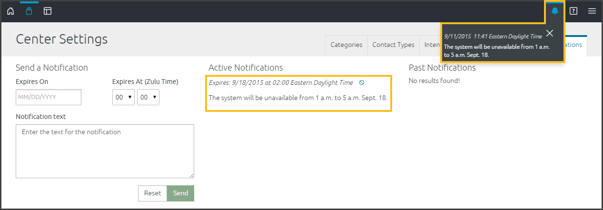

- In the Expires On field, enter the date when you want the Notification message to disappear from users’ drop-down notifications list on their Global Toolbars.
By default, you enter the Expires At time in Zulu Time. It appears as the local time zone time on each person's Notification's tab. - Write the notification:


- The list of Active Notifications on the right-side of the screen (all Center Stewards will see it there).
- Under the Notifications icon on the Global Toolbar (all users will see it there). Users can click the X in the upper-right corner of the notification to dismiss the notification or wait for the notification to expire, at which point it will be removed from their list.